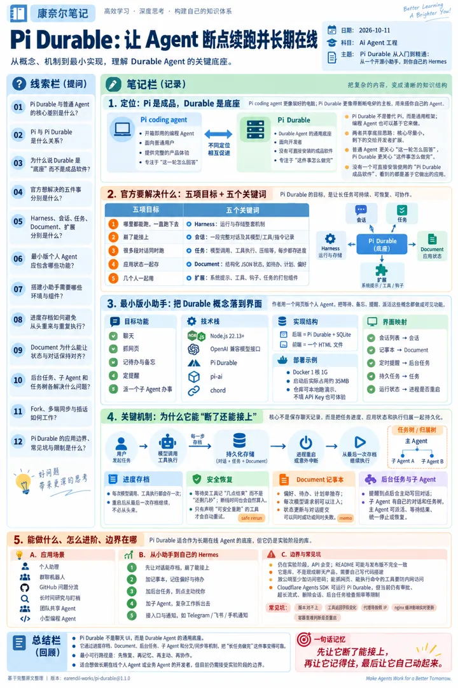
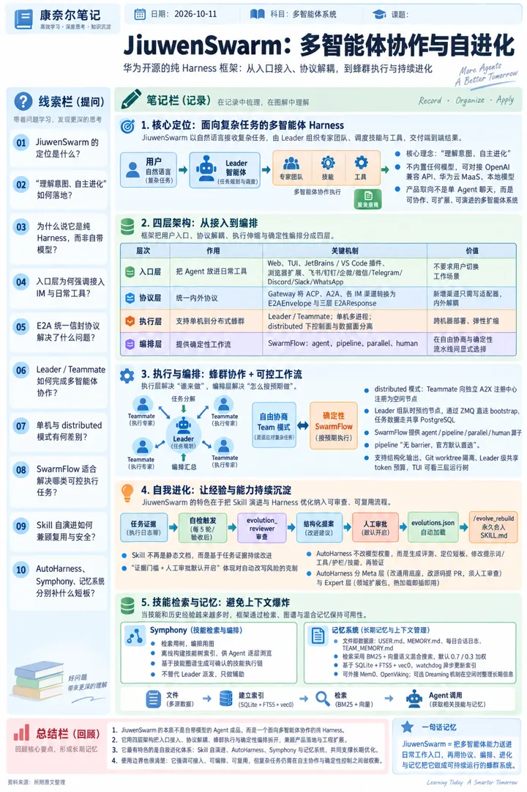
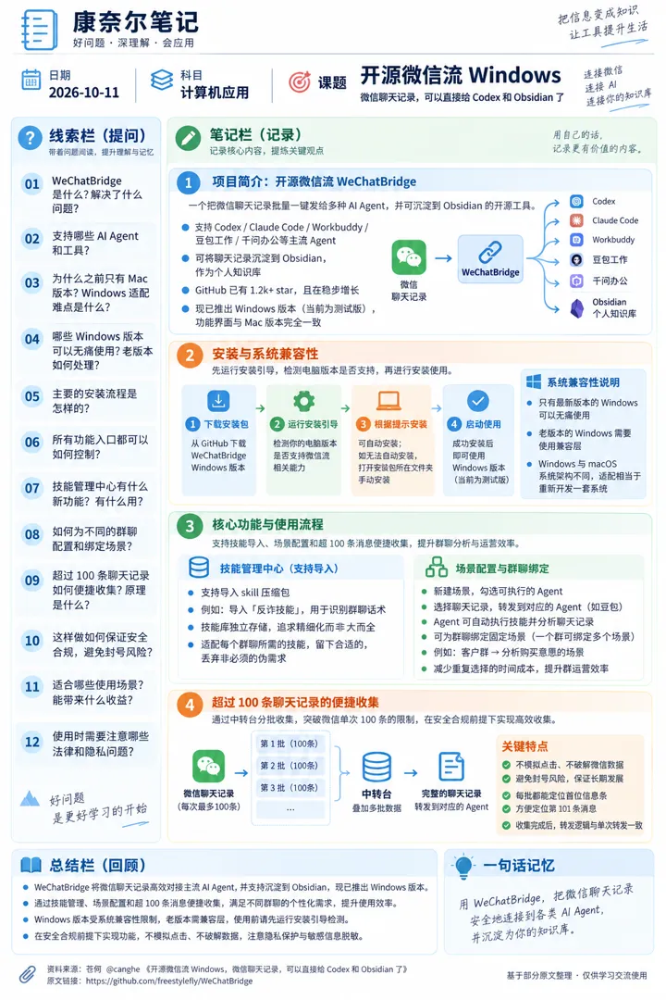
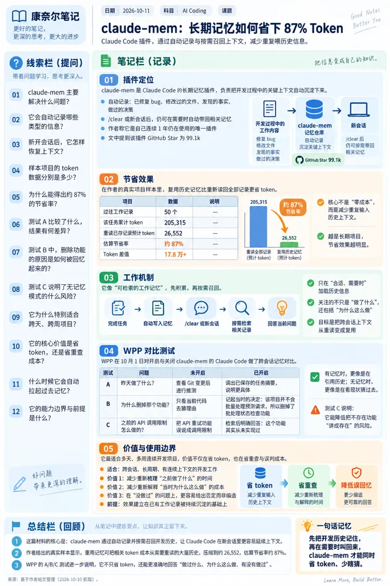
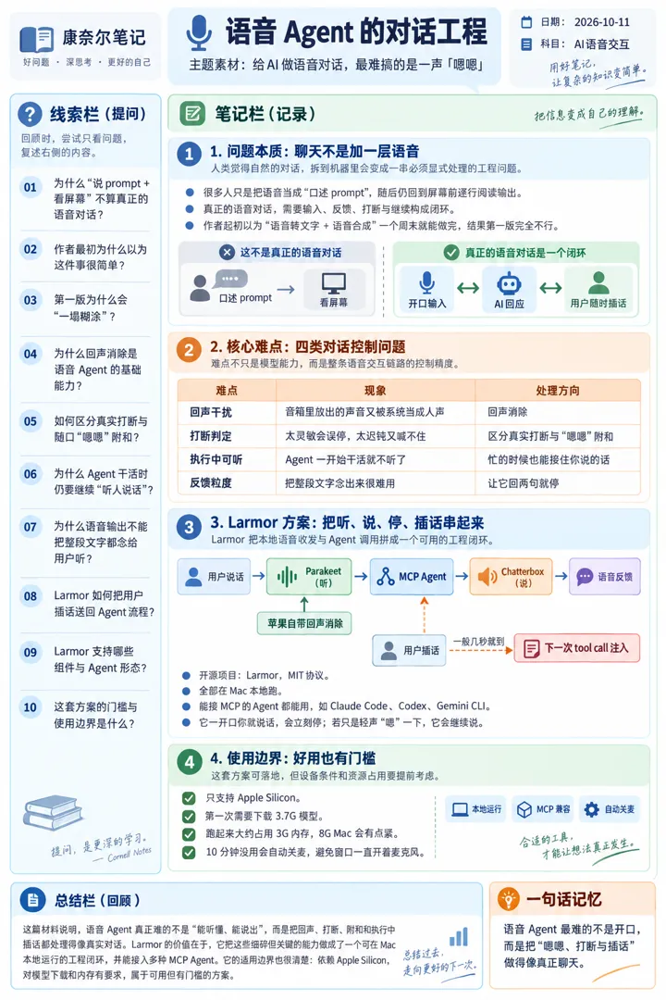

6 张技术海报
点海报看原图；每张右侧是 X 原帖信息（时间为美东 ET）。
#1 · X 原帖信息
「万字总结」- 我偷来了一份成为 Agent 工程师的学习线路
Chasen @chasen_liao
发帖时间：2026-10-10 20:39 ET
原帖：https://x.com/chasen_liao/status/2109081301819310578
发帖时间：2026-10-10 20:39 ET
原帖：https://x.com/chasen_liao/status/2109081301819310578
我之前面试了一家做 AI + web3 业内比较厉害的公司，但是没有通过吧，面试之后面试官给我了一份《Agent工程师入门指南》。我把它整理了一下，分享出来给大家提供参考，这是一份很详细很详细的、关于如何成为 Agent 工程师的文档，并且补充上我自己的学习心得 当时给我的答复是 我的工程能力不太行，AI 这一块是没有什么太大的问题的 可能计算机基础的一些东西吧 在那之后 我也去恶补了很多 MySQL、计算机网络那些八股文吧 所以我觉得这份材料比较有参考价值的地方，是它把知识点、学习文档、项目要求和验收标准放到了一起 你可以顺着它去学 LLM 基础、Prompt Engineering、RAG、Agent 应用和后端工程，也可以对照看看，自己目前还缺哪一块 我把技术内容重新整理成了下面这条路线，对应的学习文档就放在每个知识点下面，读到哪里，就可以点进去继续学 这些链接用于学习参考，每个知识点也都可以结合 AI 继续追问、做实验，再回到文档和实际结果里核对 知识点和项目要求来自这份材料，里面的例子和入门取舍，是我补充的理解 这里讨论的是 AI 应用开发方向：围绕已有模型，把检索、工具、上下文和业务系统接起来，让 Agent 能完成具体任务 读的时候，可以带着一个问题：这一部分学完之后，我能做出什么，又该怎么验证自己确实学会了？ LLM 基础：先把一次模型调用看明白 这部分是后面所有内…

#2 · X 原帖信息
Pi Durable 从入门到精通：从一个开源小助手，到你自己的 Hermes
小墨同学 @xiaomovps
发帖时间：2026-10-10 21:12 ET
原帖：https://x.com/xiaomovps/status/2109089837097853220
发帖时间：2026-10-10 21:12 ET
原帖：https://x.com/xiaomovps/status/2109089837097853220
你有没有遇到过这种情况：让 Agent 去办一件稍微长一点的事，它查了资料、列了步骤，正等着一个结果，这时候电脑合上了，或者服务器重启了。 再打开，聊天记录都在，可事情断了。它做到哪了？哪一步要重来？重来会不会把同一件事干两遍？只能你自己去理。 Pi 1.0 发布的同时，Earendil 放出了一个实验性的新包 Pi Durable，盯的就是这个问题。 普通的 Agent 关心“这一轮怎么回答”，Pi Durable 关心的是“这件事怎么做完”。 进程崩了、机器重启了、换了一台设备，它都能从断开的地方接着往下做。 它发布后的这一周多，我在 X 上陆续发了 9 条相关的帖子，从官方介绍、Document、官方视频，到社区的最佳实践和新玩法。可光读文档、看别人做，总感觉隔着一层。所以这次我自己动手，搭了一个网页版的个人 Agent，叫“Pi Durable 小助手”。 小助手的代码已经开源：github.com/xiaomoBoy/pi-durable-demo，不填 API Key 也能在本地跑起来看效果。 这篇先讲清楚 Pi Durable 是什么，再说小助手怎么搭，然后对着截图把它的每个特性拆开讲。最后一部分我更想聊的是：有了它，你能造出什么，甚至造一个属于自己的 Hermes。 先说版本：本文基于 @earendil-works/pi-durable@1.1.0。它还在实验…

#3 · X 原帖信息
华为开源多智能体协作框架 JiuwenSwarm
meng shao @shao__meng
发帖时间：2026-10-10 20:46 ET
原帖：https://x.com/shao__meng/status/2109083154682351988
发帖时间：2026-10-10 20:46 ET
原帖：https://x.com/shao__meng/status/2109083154682351988
华为开源了一个多智能体协作框架「JiuwenSwarm」 核心理念是 “理解意图、自主进化”：用户用自然语言下达复杂任务，由 Leader 智能体分解任务、组建专家团队、调度技能与工具，交付端到端结果。它不内置任何模型，是一个纯粹的 Harness，可对接 OpenAI 兼容 API、华为云 MaaS 及本地模型。 # 架构：四层拆解 1. 入口层：把 Agent 塞进日常通信工具。 支持 Web、TUI 终端、JetBrains/VS Code 插件、浏览器扩展，以及大量 IM 渠道：国内的飞书、钉钉、企微、个人微信，海外的 Telegram、Discord、Slack、WhatsApp。这是它区别于多数同类框架的鲜明产品取向，不要求用户切换工作场景，而是把多智能体能力投递到你已经在用的聊天窗口里。 2. 协议层：E2A 统一信封协议。 这是工程设计上最值得注意的部分。所有外部协议（ACP、A2A、各 IM 渠道）不直接进入系统内部，而是在 Gateway 统一转换为规范化的 E2AEnvelope 请求结构和三层 E2AResponse 响应结构（信封 → 判别载荷 → 协议投影）。这个设计让新增一个渠道只需写一个适配器，内部系统与外部协议彻底解耦。同时兼容 MCP 工具生态，并对外实现 A2A 智能体间通信协议。 3. 执行层：单机到分布式的弹性伸缩。 多智能体采用…

#4 · X 原帖信息
开源微信流 Windows，微信聊天记录，可以直接给 Codex 和 Obsidian 了
苍何 @canghe
发帖时间：2026-10-10 11:27 ET
原帖：https://x.com/canghe/status/2108942455445832059
发帖时间：2026-10-10 11:27 ET
原帖：https://x.com/canghe/status/2108942455445832059
大家好，我是苍何。 上个月底，我们开源了微信流 WeChatBridge，在网上取得了不错的反馈。 现在 GitHub 也已经 1.2 k 的 star 了，目前还在稳步增长中。 简单说，WeChatBridge 是一个把微信聊天记录批量一键发给 Codex / Claude Code / Workbuddy / 豆包工作 / 千问办公 / 等 Agent，还可以沉淀聊天记录到 Obsidian，作为个人知识库。 开源地址：https://github.com/freestylefly/WeChatBridge 但当时第一个版本还只支持 mac，很多朋友一直在期待 Windows，甚至还@起了元宝，哈哈哈。 适配难度比想象中要多花了一些时间，特别是一些老系统兼容性方面，特别难受。 经过我们不懈的努力和加班，今天，我们正式推出了 Windows 版本的 WeChatBridge🎉。功能界面和 Mac 版本完全一样。 同样支持了主流的 Agent。(当然也包括自己的产品 WeSight) 同样所有的入口都可以被约束，随时可以用开关控制入口。 并且我们还为此新加入了新的功能，大于 100 条的消息便捷收集功能，你一定会喜欢他。 目前还是 windows 测试版，大家使用有任何问题可以在 GitHub 提 issue。 你可以把这段提示词丢给你的 Workbudd…

#5 · X 原帖信息
Claude Code 插件 claude-mem：令牌节省 87%
루샨 lucian @lucian__03
发帖时间：2026-10-10 15:05 ET
原帖：https://x.com/lucian__03/status/2108997241864159442
发帖时间：2026-10-10 15:05 ET
原帖：https://x.com/lucian__03/status/2108997241864159442
클로드코드에서 토큰 절감률 87%가 찍혔습니다!!! (진짜 이거 모르는 사람이 없었으면 좋겠어요... 🙏🙏) 제가 1년째 유일하게 계속 쓰고 있는 클로드코드 플러그인이 하나 있는데요. ⭐️ 깃허브 스타만 무려 99.1k인.... ⭐️ claude-mem 플러그인입니다. 예전에 한 번 소개해 드렸지만... --> 이거 진짜 🍯꿀 x 1만% 플러그인입니다. (찐 강추) (클코에 딱 1개의 플러그인만 설치할 수 있다면 저는 무조건 이 플러그인을 꼽을겁니다.) 먼저 제가 실제로 작업 중인 프로젝트에서 나온 수치입니다. 1) 과거 작업 기록: 50개 2) 해당 작업에 투입된 토큰: 205,315개 3) 저장된 기록을 다시 읽는 예상 토큰: 26,552개 --> 기록 재사용 기준 절감률: 약 87% 🔥 무려 17만 8천 개 이상의 토큰 차이입니다. 🔥 claude-mem이 하는 일을 쉽게 설명하자면.... 클코에서 해결했던 버그, 수정한 파일, 작업 중 발견한 사실, 이전에 내렸던 결정 등을 AI가 자동으로 기록해 둡니다. 그리고 /clear를 하거나 새로운 세션을 시작해도 이전 메모리를 자동으로 올려줍니다. (적절할 때만, 필요할 때만)…

#6 · X 原帖信息
给 AI 做语音对话，最难搞的是一声「嗯嗯」（Larmor）
Xiao Tan @tvytlx
发帖时间：2026-10-10 16:23 ET
原帖：https://x.com/tvytlx/status/2109016870645084531
发帖时间：2026-10-10 16:23 ET
原帖：https://x.com/tvytlx/status/2109016870645084531
给 AI 做语音对话，最难搞的居然是一声「嗯嗯」。 有个哥们用嘴跟 Claude Code 干活好几个月了。他说，它也说回来。 他发现身边同事也用语音，但只是口述 prompt，说完又回去盯着屏幕，一行行读 Claude 写的东西。 输入换成了嘴，输出还是靠眼睛读。 他一开始也觉得这事简单：语音转文字进去，语音合成出来，一个周末搞定。 第一版一塌糊涂： 音箱里放出它自己的声音，它以为是人在说话 打断要么太灵敏，要么反应太慢 agent 一开始干活就不听了，想喊停还得回去敲键盘 后来每一条都得正经做工程： 回声消除 分清你是真想打断，还是随口「嗯嗯」附和一下 它忙的时候也能接住你说的话 让它回两句就停，别把整段文字念给你听 我觉得这几条挺有意思的。 全是人跟人聊天时根本不用过脑子的事。 我们一辈子都在下意识地做，轮到教给机器，才发现「聊天」本身就是一堆工程问题。 他把这套开源了，叫 Larmor，MIT 协议。 全部在 Mac 本地跑：Parakeet 听，Chatterbox 说，回声消除用苹果自带的。 能接 MCP 的 agent 都能用，Claude Code、Codex、Gemini CLI 这些。 你在它干活时插的话，会在它下一次调用工具时塞进去，一般几秒就到。 它一开口你就说话，它立刻停；你只是「嗯」一声，它接着往下说。 还有个细节我挺喜欢：10 分钟没用就…
王玮的 X 海报日报 · 每天从 X 推荐流挑技术帖，用 ChatGPT 生成康奈尔笔记海报 · 每张都附 X 原帖信息 · 风格改编自 VitePress（MIT）